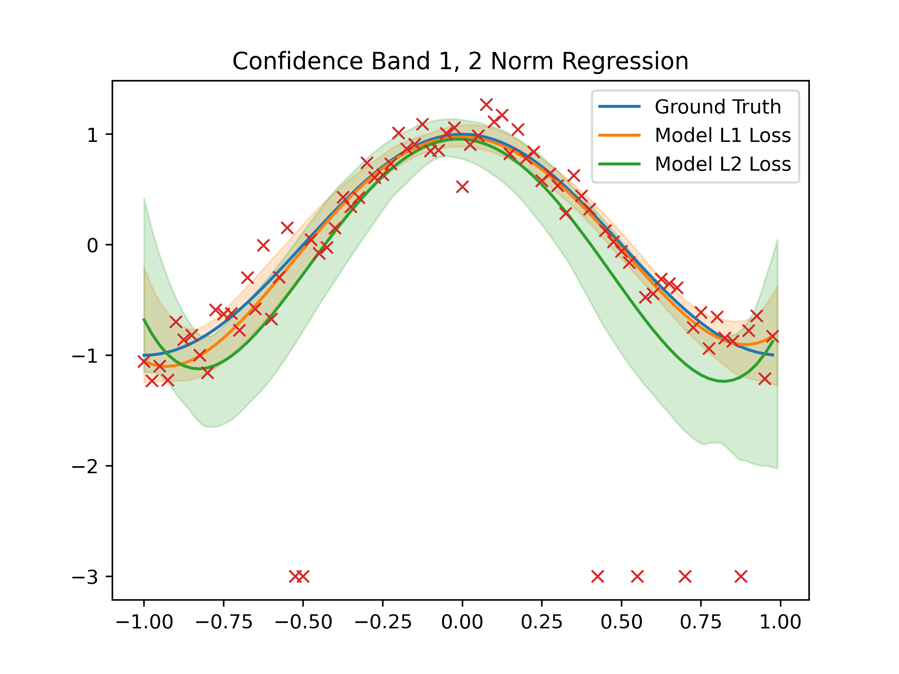
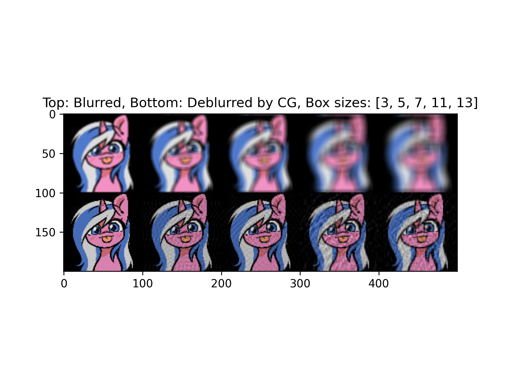
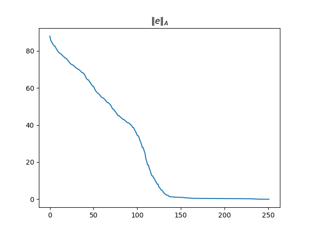
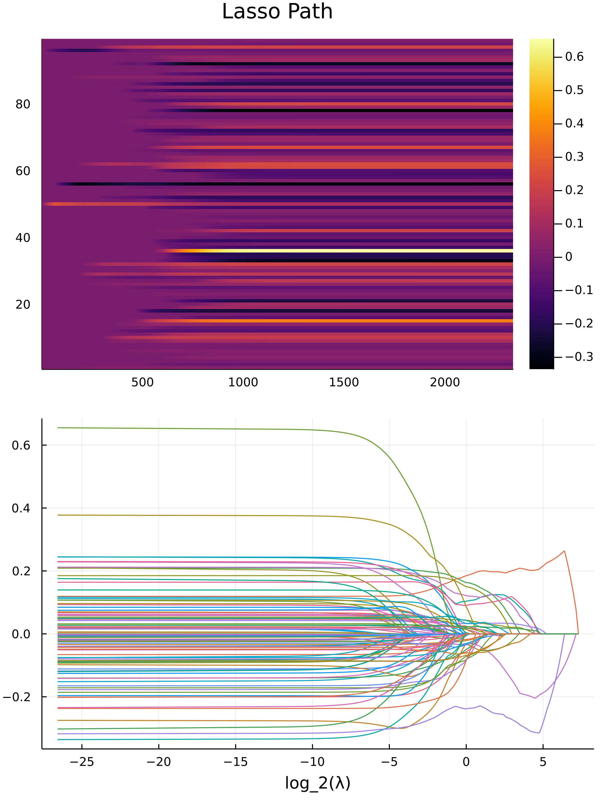

Education
- An associated degree from Seattle central college since 2018 in computer programming (Transferrable).
- Graduated with a B.S in ACMS:SCNA in 2020, which stands for "Applied Computational Mathematical Science: Scientific Computing and Numerical Algorithm" at the University of Washington.
- Graduated with a M.S in Applied Mathematics in 2022 with a thesis at the University of Washington.
- Getting A degree of Ph.D in Mathematics, in progress, at the University of British Columbia, Okanagan.
There also used to be a long section here, stating to the recruiters about what my skills are and what are my programming languages. But I had, slightly passed the prime age/qualifications of getting an entry positions hence I won't talk about those things. I know programming more than your average entry level programmers, and explosively good at algorithms and computing in Julia/python. I grew tired of programming cool stuff and failed to get a job, while all these time, failed to realize mathematics were my true sanctuary.
Papers
Publications soon.
GRE Passages
2019 Summer
Made with for the purpose of practicing GRE verbal reasoning tests and web-development
Page LinkConway's Game of Life
2019 Fall
This is a Conway's Game of life written in javascript. It runs fasts and it's really cool.

A Peek into NP-Hard via The Knapsack Problem
2020 Spring
I wrote in details about the Knapsack problem, with mathematical proofs and Psudo codes and link to repo with implementations, topics include:
- Primal/Dual Dynamic Programming.
- Approximation Algorithm and their bounds.
- Branch and Bound and Mixed Heuristic.
- Extended Knapsack and Linear Programming.
Numerical Instability of the Extended Knapsack
2020 Summer
The Branch and bound algorithm for the extended knapsack, (or branch and bound algorithm for LP in general) experiences numerical instability due to the IEEE 754 representation of number. Which is a common standard for most programming language. Here we have a discussion on the following:
- Catastrophic Cancellation as the culprit of deviation from the global optimal.
- Visualizing how exactly Catastrophic Cancellations propagate in the Branch and Bound algorithm.
- Catastrophic Cencellation plays the major role and compromises of using rational computations is not worth it because of efficiency.
- Efficiency comparison with different solution to address the numerical instability with graphs.
- Efficiency comparison of Branch and Bound implementations in python with Coin_CBC open souce Mixed Integer Solver.
- Visualizing the Optimal solution with Matplotlib.pyplot.
K-Minimum Spanning Tree (Dead Project)
2020 Winter -> 2020 Summer
The K-Minimum Spanning tree's solution could be interpreted as a "Clusters on Non-Gaussian points". In this project, we are concerned with some of the variations of the Kruskal Algorithm and how it can be applied for Classfications proboem, more specifically:
- Applied to High dimensional data such as the letter-transition matrices.
- Applied to spacial points and discuss how it does the clustering.
- Mathematical discussions and intuitive understanding.
This project failed.
L1, L2 Norm as Loss function for Polynomial Regression
Summer 2021
We are comparing the robustness of L1, L2 Norm as loss function when it comes to sensitivity to outliers in the data.
- We use simple polynomials Regression.
- We use non-parametric bootstrap for getting the model variance, with limited amount of data.
- We look at beautiful graphs and plots, with transparent confidence band for the model.
Implemented in python, uses matplotlib, numpy and CVXOPT for solving the L1 Optimization problem.

Page LinkUsing Conjugate Gradient Method to Deblur Images
Summer 2021
We are going to look into the conjugate gradient method in details and then apply it to the task of image deblurring.
- We take a look into the math of conjugate gradient, lots of proofs and calculus are involved.
- We take a look into the applications, lots of visuals and coding is involved.
the whole algorithm is implemented in python using numpy, uses matplotlib for visuals and scipy signal for speedy image convolutions.

Page Link Source Code LinkConjugate Gradient Derived using Krylov Subspace
Summer 2021
Conjugate gradient method can be derived using the idea of minimizing the energy norm of the error vector over the Krylov Subspace.
- Deriving the method.
- Formulate it as exactly the same form as the previous discussion of conjugate gradient.
- Point out the potential connection of CG with other iterative methods, e.g Lancosz Algorithm, and iterative methods like GMRes. They are made using the same mould.
No code is involved this is purely math.

Page LinkProximal Gradient Descend for Lasso Path
Summer 2021
The frustrations with ADMM based Conic Solver and Julia Optimization Frameworks sparks my own efficient implemention of accelerated proximal gradient descend for the lasso path problem.
- Motivations
- Quadratic programming -> Challenges -> Fully derivevd Proximal Gradient and proixmal operator for L1-norm regularization.
- Julia as the programming language, Julia Package Development, Results, further investigations and methods for the lasso path problem.
We have math and code and images.

Page Link Source Codes LinkMy Master Thesis
Spring 2022
Thesis Title
Lanczos Algorithm and Conjugate Gradient
Abstract
We review results from the literature on the conjugate gradient algorithm for solv- ing symmetric positive definite linear systems and the related Lanczos algorithm. We derive the conjugate gradient algorithm from the more general conjugate direction method, using projectors. We establish error bounds using exact arithmetic theory and also discuss what can happen when floating-point arithmetic is used. We present numerical experiments to illustrate this behavior.